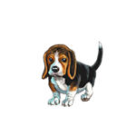
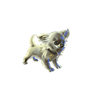
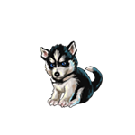
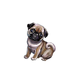
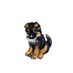

Получено: файл; исходный URL. Иллюстрация в отдельной статье ViveR_9 «Коллекция Щенков»; исходный файл без перекодирования. Авторство отдельно не установлено. Страница: источник.

Коллекция Щенков
Браузерная социальная версия; историческая статья; дата редакции неизвестна- Тип
- Коллекции
- Версия и дата
- Браузерная социальная версия; историческая статья; дата редакции неизвестна
Элементы коллекции















Данные по источнику · Браузерная социальная версия · историческая статья; дата редакции неизвестна
Предварительно: один материал, требуется сверка. Требуется сверка.
- Состав (источник Zombie-island)
- Бигл; Чихуахуа; Хаски; Мопс; Овчарка.
- Награда (источник Zombie-island)
- 500 Опыт; 1 Кинолента.
- Коллекцию Щенков можно раздобыть в ценностях,сокровищах и кладах
- Секретный клад; Ваза; Зелье; Сюрприз; Коллекционер 2; Северный аметист; Северный аквамарин; Дом привидений; Дерево страсти; Новогодняя елка; Вишневый торт; Цирковой шатер; Новогодняя елка за дубл; Новогодняя елка за зб; День защиты детей; Осенний сюрприз 4; Дружеский подарок.
- Коллекцию Щенков можно выиграть в рулетке
- Коллайдер.
- Коллекцию Щенков можно привезти с пиратских островов
- Пиратский сундук.
- Коллекция Щенков попадается при колдовании Палочками дома
- Палочка-выручалочка.
Данные по источнику · браузерная версия; платформа в ответе не уточнена · Дата на странице (формат не уточнён): 09/03/2015
Предварительно: Ответ справочного сайта; достоверность и независимость от других фанатских источников не установлены. Возможны различия редакций и версии.. Требуется сверка.
- Ответ источника
- Коллекция щенков Зомби Ферма состоит из 5 пород: биглов, чихуахуа, хаски, мопсов и овчарок. Каждый игрок, который хочет заполучить 500 баллов опыта и одну киноленту, должен собрать полную коллекцию друзей человека. Ее можно найти в разных кладах и других ценностях, среди которых находится ваза, сюрприз, секретный клад и зелье. Иногда счастливчики выигрывают коллекцию щенков в постройке под названием «Коллайдер».
Данные по источнику · браузерная версия; платформа не указана · дата редакции не установлена
Предварительно: Содержимое списка: изображения и колонки могут терять смысл при извлечении текста; отдельная страница и дата не проверены. Подписи alt иногда ошибочны.. Требуется сверка.
- Текст карточки из каталога
- Кинолента и 500 опыта Бигл Чихуахуа Хаски Мопс Овчарка Где хорошо копается Коллекция Щенков: Секретные клады
Данные по источнику · Историческая браузерная версия ВКонтакте; редакция неизвестна · дата публикации и последующей редакции не проверена
Предварительно: Фанатский справочник, возможна зависимость от других источников; вероятность находки не указана, актуальность не установлена.. Требуется сверка.
- Состав
- Бигль, Чихуахуа, Хаски, Мопс, Овчарка.
- Обмен
- 1 Кинолента и 500 опыта.
- Получение
- Рулетка Коллайдера; среди ценностей Осенний сюрприз, Драгоценный цветок, Зомби-сюрприз, Пятнистое и другие.
- Палочки
- Октавий, Пончик-победитель, Почта Любви.
- Лопаты у друзей
- Секретный клад.
- Применение
- Статья упоминает задания «Упорство!», «Слухи», «Разговоры» и «Покой»; количества не приведены.
Связанные сущности
нет проверенных связей — требуется сверка.